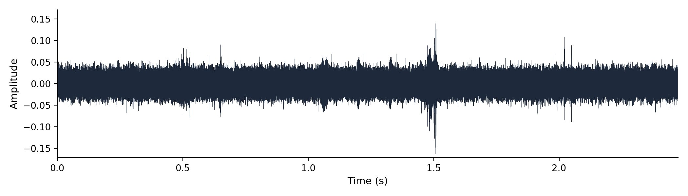
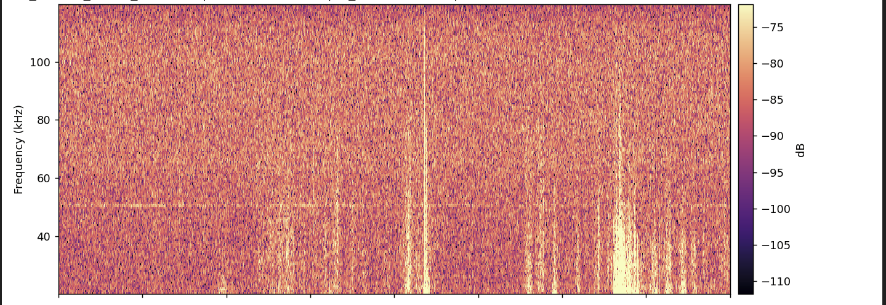
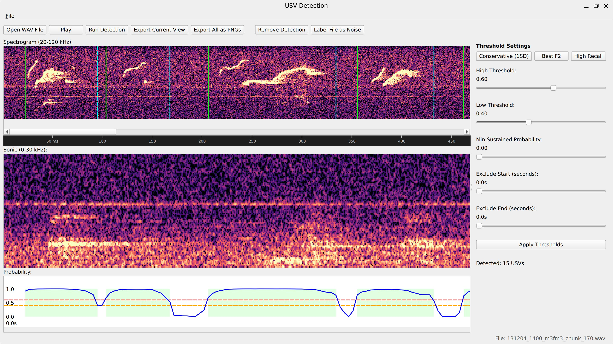
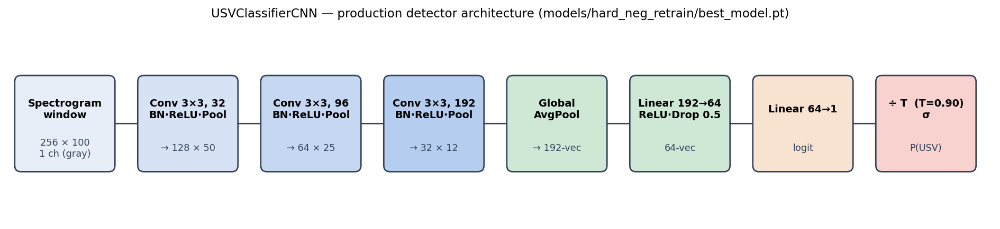
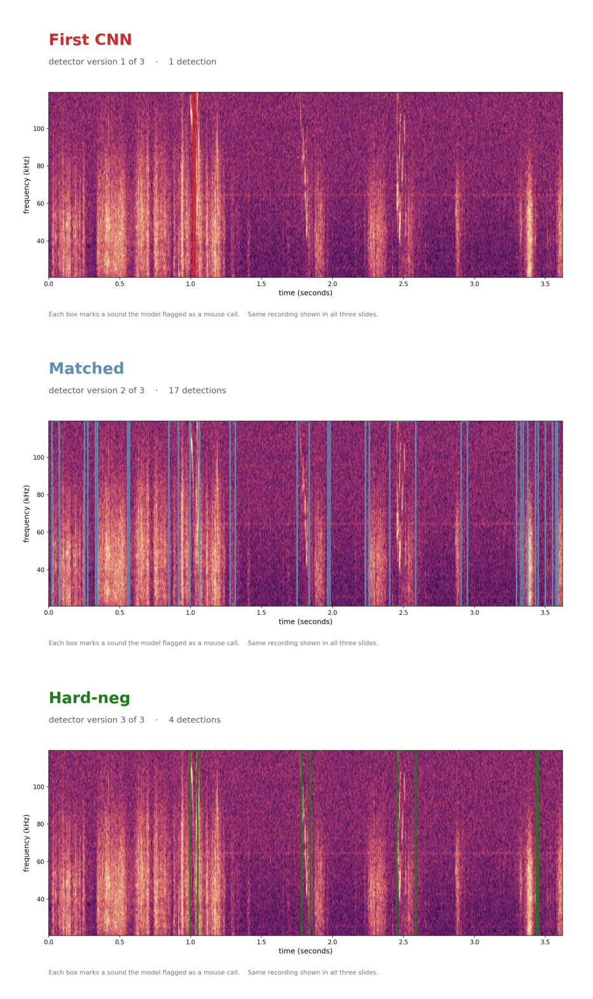
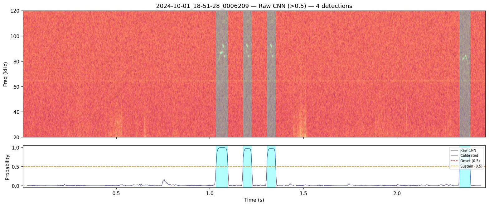
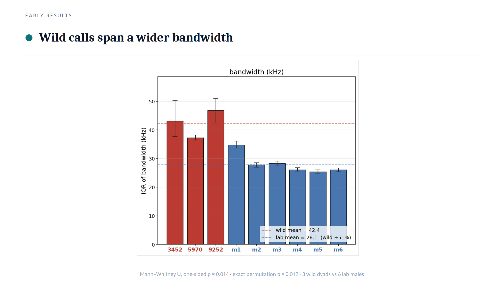
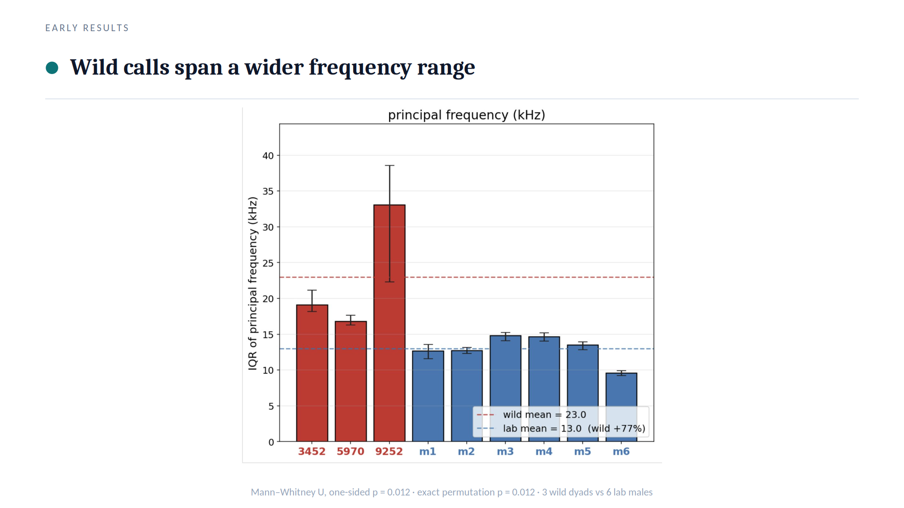
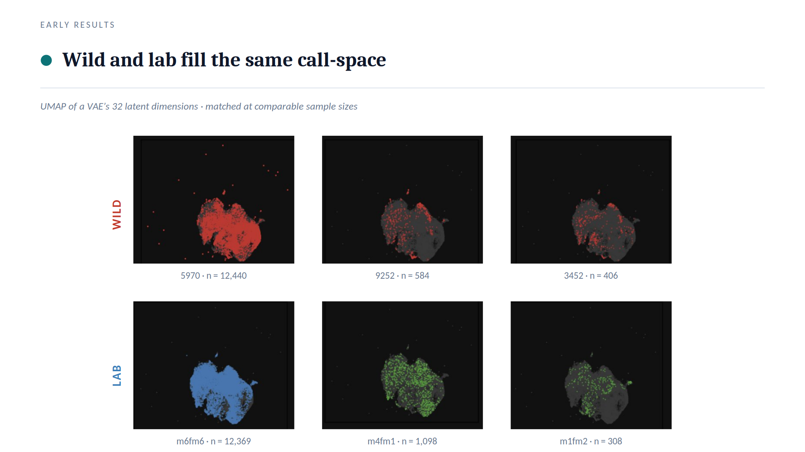

A Computational Pipeline for Detecting and Quantifying Mouse Ultrasonic Vocalizations: A Tool for Comparing Courtship Vocal Behavior in Laboratory and Wild Mice
Author: Shachar Levy Sahar
Supervisor: Prof. Mickey London, Edmond and Lily Safra Center for Brain Sciences (ELSC), The Hebrew University of Jerusalem
Etgar Final Project
2026
Abstract
Mouse courtship is largely expressed as ultrasonic "song" emitted mainly by the male, making quantification of ultrasonic vocalizations (USVs) a natural entry point into the behavior. Yet USVs are invisible in the pressure waveform, live at 20–120 kHz buried in cage noise that shares those bands, and general-purpose audio tools are slow and cannot be scripted for bulk counting. To ask whether laboratory and wild-derived mice court differently, I first built the instrument that question requires: a purpose-built labeling tool and a convolutional detector that reads USVs from raw spectrograms and, after calibration and event-stitching, counts them at scale. Though trained only on wild-derived recordings, the detector transferred without retraining to a laboratory cohort it had never seen, scoring 96–100% precision and 97.6–99.7% recall on human review, matching or bettering its wild performance; the lab detections behind the comparison are therefore no wild-specific artifact. Applying the pipeline to wild (three dyads) and laboratory (a 17-couple partner-swap assay) cohorts yielded the study's central result: wild calls are acoustically more variable, their per-unit spread running +51% wider in bandwidth and +77% wider in principal frequency than lab calls (both one-sided Mann–Whitney p = 0.012). Yet wild and lab calls overlap on one shared 32-dimensional call-space, showing no gross repertoire reorganization: wild mice draw from a wider slice of the same alphabet, not a different one. Given a tiny sample (3 wild dyads vs 6 lab males) and a known recording-cage confound, these are promising leads, not a proven difference.
1. Introduction
Mice are not silent animals. When an adult male house mouse encounters a female, he produces a rapid stream of ultrasonic vocalizations (USVs), brief frequency-modulated whistles well above human hearing. Holy and Guo (2005) established that these are not random emissions but structured, song-like sequences, recurring in characteristic syllable types and temporal patterns reminiscent of birdsong; Chabout et al. (2015) showed the song is socially meaningful, its syntax varying with social context and shaping female preference; and this temporal regularity is itself exploitable for automatic syllable labelling (Hertz et al., 2020). Mouse courtship is, in large part, expressed as ultrasonic song, which makes systematic quantification of USVs a natural entry point into the behaviour itself.
A measurement problem stands between that biology and any quantitative claim about it. USVs occupy roughly 20–120 kHz, far above the ~20 kHz ceiling of human hearing and ordinary audio, and in the raw pressure waveform a USV is essentially invisible: Figure 1 shows a 2.5 s clip containing four genuine USVs that leave nothing an observer could point to, because the waveform encodes energy over time, not the spectral structure that defines a call.

The calls become visible only in a spectrogram, the time–frequency image a short-time Fourier transform produces, where a USV appears as a thin curved ridge sweeping through the 20–120 kHz band. Recovering that structure constrains the recording. To capture frequencies up to 120 kHz without aliasing, the Nyquist criterion demands a sample rate of at least 240 kHz, so these recordings use 300,000 Hz (Nyquist 150 kHz, with headroom above the USV band). The detection STFT deliberately favours time resolution over fine frequency detail, the right trade-off for short, narrow-band calls whose onsets and offsets must be captured crisply (exact figures in §5.2); the detector is locked to this 20–120 kHz, 256-row grid and would need retraining if the band changed.
The difficulty compounds at scale. A real cage recording is not a clean signal: animals move and scuffle, ventilation hums, hardware rattles, and many of these sounds are broadband, depositing energy across the 20–120 kHz band itself. Figure 2 shows the overlap directly, with vertical streaks from cage activity cutting through the band where the calls live, so no threshold on loudness alone can separate the two.

General-purpose audio software does not close the gap. Audacity can be coaxed into displaying a 300 kHz recording, and a USV is even visible in its spectrogram view, but it loads these high-rate files slowly and cannot be scripted to detect and export thousands of calls; there is no off-the-shelf application into which one can load these recordings and start counting automatically.
Several automated systems exist. DeepSqueak (Coffey et al., 2019) reframed detection as object detection on the spectrogram image; VocalMat (Fonseca et al., 2021) paired computer-vision segmentation with a convolutional classifier; AMVOC (Stoumpou et al., 2022) and BootSnap (Abbasi et al., 2022) added further toolchains, the latter aimed at robust detection in noisy recordings; and Goffinet et al. (2021) learned low-dimensional feature spaces with a variational autoencoder to quantify whole repertoires without a fixed taxonomy. Each advanced the field, yet adopting one wholesale left a gap: I needed a pipeline whose every signal-processing constant, model checkpoint, and threshold was fixed, documented, and reproducible on these recordings, with frame-level probabilities trustworthy enough to convert into call counts and acoustic measurements that survive statistical scrutiny. That requirement motivated a purpose-built instrument rather than a reused black box.
The biological question it serves is comparative: is there a difference in courtship behaviour between laboratory and wild mice, and if so, what is it? Laboratory mice are highly inbred and reared for generations under conditions unlike anything their wild-derived relatives experience, and it is far from obvious whether their courtship vocal behaviour still resembles that of wild animals. The lab records both kinds of couple in modified Live Mouse Tracker (LMT / MiceCraft) cages, with a 300 kHz ultrasonic microphone and an overhead depth-sensing camera both mounted above the cage, precisely so the comparison can be made on matched apparatus. The contribution is accordingly hybrid: the detection pipeline is the primary deliverable, and applying it to wild (three dyads) and laboratory (a partner-swap assay) cohorts yields statistically-tested leads, wild calls are acoustically more variable while both groups fill the same call-space, so these remain promising leads, not a proven difference. This thesis builds a measurement tool in order to make the biological question answerable.
2. Research Question and Objectives
The central question driving this work is: "Is there a difference in courtship behavior between laboratory and wild mice? And if so, what is it?" Mouse courtship is largely conducted through ultrasonic song, emitted mainly by the male (Holy & Guo, 2005). Answering it objectively requires quantifying thousands of calls reproducibly, yet, as established in §1, USVs are invisible in the waveform, live at 20–120 kHz, sit in cage noise sharing those bands, and general-purpose audio tools are too slow and cannot be scripted to count them at scale. Building the measurement instrument is therefore the necessary first step and the main contribution; the biological question is the spine that organizes it. At the outset I set myself two concrete build objectives, and a third that grew out of them once the detector existed:
- Build a Python-native, CNN-aligned labeling and visualization tool usable at 300 kHz, to create and inspect USV labels (Figure 3).
- Train and validate a convolutional neural network detector that is selective in noisy cage recordings, via hard-negative retraining across three detector generations (Figures 4, 5, 7).
- Apply the pipeline to wild (three dyads) and lab (partner-swap) cohorts to test for a courtship vocal-behavior difference (Figures 8–10).
What I did not anticipate at the outset was how much stood between a trained network and a trustworthy call count. A detector that emits a probability for every window is not the same as a tool that counts calls: the raw probability trace had to be calibrated, stitched into discrete events by hysteresis, filtered for false positives, and triaged for human review before those probabilities became countable events at scale (Figure 6). That wrapping, unplanned but unavoidable, became a substantial part of the engineering contribution, and §3.3 treats it as a result in its own right.
The honest result, developed across the Results that follow, is promising leads, not a proven difference. The Results mirror the build order: a labeling substrate (3.1), the detector (3.2) and the calibration and event-stitching that turned it into a trustworthy counter (3.3), the scaled pipeline (3.4), and finally the biological application (3.5).
3. Results
3.1 A purpose-built labeling and visualization tool
How do you produce and inspect trustworthy USV labels at 300 kHz when general-purpose audio tools fail? Every later component, the detector, its calibration, the lab-versus-wild comparison, rests on a ground-truth set of human-confirmed calls. Yet, as established in §1, a USV is invisible in the waveform, lives at 20–120 kHz overlapped by broadband cage streaks, and cannot be labelled at scale in a general-purpose editor such as Audacity, which loads these 300 kHz files slowly and cannot be scripted to capture calls. I therefore needed a labeling substrate an annotator could trust frame-by-frame and that showed the human exactly what the detector would later see.
My strategy was to build the labeling and review environment in Python rather than wrap a foreign tool, so the spectrogram, sample rate, and analysis band are the same objects the rest of the pipeline imports. The result is a PyQt6 desktop application (scripts/run_app.py) with three vertically stacked panels: a 20–120 kHz spectrogram with each detected USV's boundaries drawn on it, a 0–30 kHz sonic panel for audible context, and a CNN-probability panel carrying onset and sustain threshold lines (Figure 3). The canonical constants, 300 kHz sample rate and the 20–120 kHz band, are imported from a single source (corpus.py), so the view cannot silently drift from what the network was trained on.

The workflow is per-detection: the operator opens a WAV, runs detection, then for each candidate may drag a boundary, add a detection by hand, or delete a false one; every edit is recorded with user_adjusted / user_action metadata so a hand-correction is never confused with raw machine output. Threshold presets and live arrow-key nudges (0.01 in probability units) let the annotator tighten or loosen the onset/sustain gates and immediately see the interval set update, and a single Label File as Noise flag triages an all-noise recording without per-call work. The interactive defaults (onset 0.60, sustain 0.40) are deliberately aligned to the offline batch hysteresis so what the human inspects matches the production detector; the app's Detect runs CNN + hysteresis only, omitting the false-positive filter and temperature calibration, a two-path distinction examined in full in §3.3.
The tool records a per-WAV JSON label file: a metadata header (WAV path, model checkpoint, duration, sample rate), the detection parameters, one object per USV with its start/end times, spectrogram columns and CNN probabilities, plus the full probability trace so reopening a file reconstructs the exact view. These hand-labels are the training signal for the detector described next: the hard-negative and hard-positive examples that turned an over-firing network into a selective one were marked here, with the annotator looking at the same 256-row, 20–120 kHz spectrogram the CNN consumes. The tool thus replaced a slow, unscriptable Audacity-based workflow with a CNN-aligned one whose JSON output flows straight into model training.
3.2 A convolutional detector for USVs in raw recordings
With labels in hand, the central engineering problem remained. The sub-question is concrete: can a convolutional neural network detect USVs directly from spectrograms, despite cage noise that overlaps the call band? As established in §1, a USV shares its 20–120 kHz band with ventilation, paw-scuffs and bedding rustle, so energy thresholding alone cannot separate calls from noise.
My strategy was to treat detection as a sliding-window image-classification problem. Rather than hand-engineer features or threshold spectrogram energy, which fails because noise and calls share an energy band, I trained a small convolutional network to read a short spectrogram window and output a single probability that it contains a USV, then slid that window across the recording to produce a per-window probability trace. The detection spectrogram uses the locked corpus grid (§5.2): sample rate 300,000 Hz, STFT n_fft = 512, hop = 128. Restricting analysis to the 20–120 kHz band keeps the detector inside the range where mouse song lives (Holy & Guo, 2005; Portfors, 2007) while leaving headroom below the 150 kHz Nyquist limit.
The architecture is shown in Figure 4. The network, USVClassifierCNN, takes a single grayscale spectrogram window of 256 frequency rows by 100 time columns (~43 ms of audio) and passes it through three convolutional blocks. Each block is a 3×3 convolution (padding 1) followed by batch normalization, a ReLU nonlinearity, and 2×2 max-pooling. Across the three blocks the number of filters grows (32, then 96, then 192) while each block's 2×2 max-pool halves the height and width of the feature map (256×100 → 128×50 → 64×25 → 32×12); the network gets deeper, more feature channels, even as the spatial grid it operates on gets smaller, the standard convolutional pyramid that trades where a pattern is for what it is. The 192 feature maps are collapsed by global average pooling into a single 192-dimensional vector, which feeds a compact classifier head: Linear(192→64), ReLU, dropout (0.5), and a final Linear(64→1) producing one logit. A sigmoid converts that logit into P(USV).

The convolution-then-pool design follows the standard convolutional lineage for image recognition (He et al., 2016); the global average pool lets a window-trained classifier slide across time without a fixed-length flatten layer. It is deliberately small, far smaller than the ResNet-scale classifiers used downstream, because the task is binary and the input a tiny, single-channel patch.
Two pre-processing choices are essential, both following from the noise problem. First, global MAD normalization. Before any windows are cropped, the entire spectrogram is normalized once: I take the median and median absolute deviation (MAD), clip to [median − 2·MAD, median + 4·MAD], and rescale to [0, 1]. Normalizing globally preserves the relative energy structure: quiet regions stay quiet and loud USV regions stay loud, so the network sees a high-contrast call against the noise floor. Per-window normalization (the tempting but wrong alternative) rescales every patch independently and silently destroys high-confidence USVs by stretching an otherwise-quiet window's noise floor up to full contrast; the clip-before-normalize order must also match the training render, or the input distribution shifts. Second, an energy pre-gate. Windows whose maximum normalized energy falls below a small threshold skip the CNN and are assigned probability zero, a pure efficiency step, and one of the few places the two detection paths differ (gate 0.1 in the batch pipeline versus a more conservative 0.35 in the interactive app).
The architecture defines what the detector is; the evidence that it detects calls selectively comes from three generations run on the same recording (Figure 5, examined in §3.3). Figure 6 shows the production detector on a 2.5 s clip: the top panel is the 20–120 kHz spectrogram with four detected USVs shaded, the bottom the sliding-window CNN probability trace, which rises sharply over each true call and stays near zero over the noise.


The probability trace is the raw material for everything that follows, but a raw frame-by-frame probability is not yet a trustworthy call event, and the first detector I trained was far from selective. Turning this trace into reliable, countable USV events is the next section.
3.3 Calibrating the detector and making it trustworthy at the event level
A detector that fires on real USVs is necessary but not sufficient. The sub-question here is: how do I make the detector selective against cage noise, and turn a noisy probability trace into trustworthy, countable call events? Getting "fires on USVs" was easy; getting "fires on USVs and not on cage-noise streaks" took three generations.
Figure 5 (introduced in §3.2) tells that story by scoring three detector generations on the same 3.6 s recording. The first CNN (v1) was under-sensitive: only 1 detection, missing real calls. Retraining on more matched windows overcorrected, and the "matched" detector (v2) produced 17 detections on that clip, over-firing on cage-noise streaks that shared the call band. The fix was hard-negative retraining: I mined the windows where v2 fired on noise, added them to the training set as explicitly-labeled negatives (620 hard negatives plus 144 hard positives), and retrained. The production model (hard-neg, v3) produced 4 detections, selective, flagging the real calls without chasing every noise streak. (These per-generation counts are illustrative of one 3.6 s clip, read from the figure; the pattern, under-sensitive → over-firing → selective, is the documented, reproducible result.) Hard-negative retraining is the single most important training decision in the detection core, and it works because the hardest negatives are exactly the noise patterns that look most like calls.
I then measured the production detector on data it had never seen, and I report the conservative, deployment-relevant number rather than the flattering one. The honest evaluation slides the full pipeline across 31 whole recordings held out from both the training set and the hard-example mining pool, recordings the network had encountered in no form, and scores it against hand-labeled calls and hand-flagged all-noise files. On that truly-unseen set the detector reached a whole-file sliding ROC-AUC of about 0.92. At its operating point (production onset threshold 0.60) it recovered 85% of the hand-labeled calls (107 of 126) at 84% event precision, and, most tellingly for a noise problem, it raised zero false events on all 13 all-noise recordings. This is the number that describes the deployed detector.
A second, more flattering score is worth stating precisely, so that it is not mistaken for the first. On a curated held-out set of 1,829 spectrogram windows the network scored accuracy 93.9%, precision 90.5%, recall 88.5%, and specificity 96.1% (confusion: 479 true positives, 50 false positives, 1,238 true negatives, 62 false negatives), with ROC-AUC 0.989 and average precision 0.974 (Figure 7). These are per-window classification metrics, and their negatives are synthesized noise windows rather than the messy, real-recording noise the detector meets in deployment; the same score barely moves across all three detector generations, so it cannot see the noise-rejection improvement that the whole-file number above does. It measures how cleanly the network separates a call patch from a synthetic negative, not how many calls survive on a full recording, which is why I lead with 0.92 and treat 0.989 as a ceiling rather than the headline.
![Figure 7. Held-out per-window classification performance (n = 1,829 windows), the curated-patch view, secondary to the whole-file ROC-AUC ≈ 0.92 reported in the text. (a) Confusion matrix (TP 479, FP 50, TN 1238, FN 62; axes: predicted vs true class). (b) ROC curve (x: false-positive rate; y: true-positive rate), AUC = 0.989. (c) Precision–recall curve (x: recall; y: precision), average precision = 0.974. Summary: accuracy 93.9%, precision 90.5%, recall 88.5%, specificity 96.1%. These are window-level metrics against synthesized negatives; the deployment-relevant figure is the whole-file ROC-AUC ≈ 0.92 in the text.](figures/fig07_heldout_performance.png)
Both numbers describe the same network; the gap between them is entirely about what the negatives are and whether scoring happens per-window or per-recording. Turning the raw probability trace into the discrete, countable events behind the 0.92 is the job of the post-processing that follows. Three stages do it. First, temperature calibration (Guo et al., 2017): the logits are divided by a fitted temperature, T = 0.902, before the sigmoid. Because T < 1, this slightly sharpens the probabilities and modestly improves calibration (negative log-likelihood 0.16908 → 0.16809). The transform is monotonic, leaving ROC and AUC unchanged, and it fixes the meaning of a probability value, not the ranking of windows, which matters because the next stage applies fixed numerical thresholds.
Second, hysteresis converts the per-window trace into discrete intervals. An event is seeded only when the probability rises above an onset threshold of 0.60, grown outward while it stays above a lower sustain threshold of 0.40, and kept only if it spans at least 3 windows. The two-threshold scheme, a high gate to start and a lower gate to continue, prevents a single noisy frame from either spawning a spurious event or fragmenting one real call. These thresholds were selected by cross-validation (mean F2 = 0.867 ± 0.051) and differ from the library defaults (onset 0.75 / sustain 0.40 / min-duration 5).
Third, a false-positive (FP) filter does a second-stage USV-versus-noise decision on each surviving event: a class-balanced logistic regression over 11 per-event features (a StandardScaler → LogisticRegression pipeline; its dominant feature is the event's peak probability), trained to reject noise events that pass hysteresis. Its cost is small and favorable: it keeps ~87.3% of ground-truth USVs (an interval-level loss of ~7.67%) while rejecting 100% of noise-only files and ~64% of in-recording false positives. (Earlier sessions wrongly reported ~70% USV loss by confusing event-level with interval-level accounting; the interval-level figure is correct.) Finally, a triage step sorts each recording into auto-accept (every event peak ≥ 0.90), auto-reject (no events, or maximum probability ≤ 0.10), or manual review, attaching quality-control flags (high noise floor, excessive event count, over-long events) so a human reviews exactly the ambiguous recordings.
Finally, one operational distinction must not be conflated, because conflating it has caused real bugs. There are two detection paths. The interactive desktop app's "Detect" applies the CNN plus hysteresis only, on raw (uncalibrated) probabilities with the conservative 0.35 energy gate, the tool for visual inspection (Figure 3). The offline batch pipeline adds the full chain, temperature calibration, the FP filter, and triage, and is the path used to process whole cohorts at scale (§3.4). Mixing them is a known failure: applying the batch FP filter inside the app context once wrongly suppressed real detections (8 → 0 on one file), because the filter assumes the calibrated, full-pipeline context it was trained in. Keeping the two paths distinct makes the detector both interactively inspectable and trustworthy at scale.
One test matters more than any held-out number: the detector generalizes to laboratory mice it was never trained on. Every training example came from wild-derived recordings (cohort 5970); the network saw zero laboratory audio. Yet the laboratory cohort I compare against in §3.5 was recorded from a genetically distinct population in a different cage, so a fair reader should ask whether a wild-tuned detector can be trusted there at all. To find out, I ran the full batch pipeline across laboratory cohort 131204, adding only the adaptive soft-notch that suppresses this cage's 50.7 kHz equipment tone (a lab-only preprocessing step, §5.4), and reviewed every result by eye against the spectrogram. On a high-activity sample the detector was near-perfect (60 chunks, 912 detections, 100% precision, 99.7% recall), but that sample flatters the model because it was chosen using the model's own confidence. The number that counts comes from a model-blind sample drawn at random from the two hardest triage tiers, 30 ambiguous manual-review plus 30 auto-reject chunks, with selection independent of the CNN: there the detector reached 96.4% precision (162 of 168 detections were real calls) and 97.6% recall (162 of 166 calls found). Most tellingly for a noise problem, of the 30 chunks the CNN rejected outright a human found a missed call in none, and all six false positives were a single fire on an otherwise all-noise chunk, exactly where the model already reported low confidence. Figure 11 shows both ends of this behaviour on real lab audio: a busy chunk with every call boxed, and a noisy chunk correctly left empty. A detector trained only on wild mice, transferring to lab mice at 96–100% precision without retraining, is what lets the lab-versus-wild comparison in §3.5 rest on trustworthy detections rather than a wild-specific artifact.
![Figure 11. Cross-population generalization: the wild-trained detector applied to laboratory mice it never saw (cohort 131204), run with the lab-only soft-notch. (a) A high-activity lab chunk with all 20 USVs correctly detected (cyan boxes; x: time, s; y: frequency, kHz). (b) A noisy all-noise lab chunk correctly left empty (0 detections). Dotted blue line: the 50.7 kHz cage equipment tone the soft-notch suppresses. On a model-blind hard-tier sample the detector reached 96.4% precision (162/168) and 97.6% recall (162/166), with all 30 auto-reject chunks correctly empty; ground truth is human visual review.](figures/fig11_lab_generalization.png)
3.4 Running the pipeline at scale with human-review triage
Detector metrics establish that the CNN is trustworthy on individual windows, but a courtship study needs whole cohorts processed identically at scale. My sub-question was practical: how do I process entire cohorts reproducibly while keeping human attention on the recordings that need it?
The strategy was a single-command batch runner, scripts/run_batch_detection.py, that takes a directory of WAV files and emits one detection JSON per recording plus a summary.parquet triage table. It requires, by design, five model-related flags, the CNN checkpoint, the temperature-scaling file, the false-positive-filter pickle, the fitted hysteresis configuration, and the worker count. The script will run with only the model and an output directory, but omitting any other artifact silently degrades the result: without temperature the probabilities are over-confident and the triage tiers drift; without the FP-filter the detection list is bloated with in-recording false positives; without the hysteresis configuration the detector falls back to library defaults (onset 0.75 / sustain 0.40 / min-duration 5) instead of the production-tuned values (onset 0.60 / sustain 0.40 / min-duration 3). I therefore treat all five as mandatory and do not report production triage from runs missing them. This offline batch path is not the desktop app's "Detect" (the two-path distinction, §3.3).
The triage step keeps human review tractable. Each recording is sorted into one of three tiers from its event probabilities: auto-rejected if it has no events or its maximum window probability is at most 0.10; auto-accepted only if every event peaks at probability ≥ 0.90; everything in between goes to manual review. Quality-control flags, a high noise floor (90th-percentile window probability > 0.4), a high event count (> 10), an over-long event (> 600 ms), or an event spanning most of the recording, promote borderline files to review and let me audit the cohort for systematic problems. Confident detections and rejections are dispositioned automatically; a human looks only at the ambiguous minority.
I ran this pipeline on four cohorts. The wild-derived recordings comprise three dyads, 5970, 3452, and 9252, each a single wild mouse couple (one male, one female), so each is statistically N = 1 couple and cross-dyad differences are a between-animal noise floor rather than a strain effect. The laboratory cohort 131204 is a 17-couple partner-swap assay. After detection and DeepSqueak classification the matched-call counts were 7,921 for 5970, ~401 for 3452, ~604 for 9252, and 40,787 for the clean lab table, tens of thousands of objectively measured calls from one reproducible command per cohort. I could finally turn the instrument on the biological question.
3.5 Applying the pipeline: do lab and wild mice court differently?
With the pipeline producing tens of thousands of measured calls, I could finally ask the central question. The detections feeding this comparison are trustworthy even though the detector was trained only on wild mice: §3.3 showed it transfers to these very lab recordings at 96–100% precision on human review, so any lab-versus-wild difference below is a property of the calls, not of a wild-tuned detector. Each detected call was passed through the DeepSqueak bridge, which re-renders the call's spectrogram and extracts per-call features with DeepSqueak's CalculateStats, including bandwidth (the box's Delta Freq) and principal frequency (the dominant frequency of the tonal ridge). These let me ask whether wild and lab calls differ in acoustic spread. I report the answer as three hedged sub-results, treated up front as promising leads, not a proven difference.
(a) Wild calls span a wider bandwidth. My first sub-question was whether wild calls vary more widely in bandwidth than lab calls. The strategy was to compute, per biological unit, the interquartile range (IQR) of call bandwidth, the spread of the middle 50% of that unit's calls, then compare wild against lab. The unit matters: three wild dyads (5970, 3452, 9252) and six lab males (m1–m6, each male's calls pooled across his couples), giving N = 3 wild versus N = 6 lab. I tested with a one-sided Mann–Whitney U test (wild > lab) and confirmed it with an exact permutation test over all 84 possible 3-versus-6 splits. The result was a clear lead: mean per-unit bandwidth IQR was 42.4 kHz in wild versus 28.1 kHz in lab (a +51% wider spread in wild), Mann–Whitney U one-sided p = 0.012, exact permutation p = 0.012 (Figure 8). The wild and lab units separated perfectly in rank, but perfect rank separation is the most a test on nine aggregate values can show, and it is exactly what produces the floor p ≈ 0.012; it is a ceiling on what is knowable here, not evidence of deep statistical power.

(b) Wild calls span a wider principal-frequency range. My second sub-question applied the identical logic to principal frequency: do wild calls occupy a wider band of carrier frequencies? Using the same units (3 wild dyads, 6 lab males) and the same one-sided Mann–Whitney U plus exact permutation test, the per-unit IQR of principal frequency was 23.0 kHz in wild versus 13.0 kHz in lab, a +77% wider spread in wild, with Mann–Whitney U one-sided p = 0.012 and exact permutation p = 0.012 (Figure 9), the same perfect rank separation and p-floor described in (a). Two features, measured independently, point the same way: wild calls are more variable.

(c) Yet wild and lab fill the same call-space. The natural worry is that "more variable" might mean wild mice use a reorganized or expanded repertoire, a qualitatively different vocal alphabet. My third sub-question was whether the two groups occupy different regions of call-space or merely sample the same region with different breadth. To answer it I embedded each call in a 32-dimensional contour-VAE latent, a learned low-dimensional feature space of call shape, in the spirit of low-dimensional repertoire embeddings (Goffinet et al., 2021), and visualized wild and lab calls with UMAP at matched sample sizes (wild: 5970 n = 12,440, 9252 n = 584, 3452 n = 406; lab: m6fm6 n = 12,369, m4fm1 n = 1,098, m1fm2 n = 308), so neither group's density dominated. The two groups landed on the same manifold: wild and lab calls overlap rather than forming separate islands (Figure 10). This overlap is read qualitatively from the embedding, I did not compute a quantitative overlap statistic, so the claim is "no visible separation," not a measured null.

At the population level there is no gross repertoire reorganization, wild and lab mice draw from the same call-space, even though wild draws from a wider slice of it. This overlap-with-wider-spread pattern is not inconsistent with reports that wild-derived house mice modulate a shared repertoire by context rather than inventing distinct call types (Zala et al., 2020), bearing in mind that my overlap is read qualitatively from the UMAP rather than quantified.
Taken together, the three sub-results give an honest, internally consistent answer: wild calls are acoustically more variable in both bandwidth and principal frequency (statistically supported leads), yet fill the same call-space (a qualitative null against gross reorganization). Because that overlap coexists with two significant spread differences, and because the biological sample is tiny (3 wild dyads versus 6 lab males) and the recording cage is a known confound, these results motivate a shape-only follow-up comparing pure call geometry independently of where each call sits in the spectrogram, where a definitive difference, if one exists, should emerge. The Discussion now weighs how far these leads can be pushed.
4. Discussion
I set out to build a measurement tool, because the courtship song is invisible in the waveform (Figure 1), lives at 20–120 kHz where cage noise shares the same bands (Figure 2), and cannot be counted at scale in general-purpose audio tools, which are slow and cannot be scripted. To ask whether laboratory and wild-derived mice court differently, I first had to make thousands of calls countable. I built a Python-native, CNN-aligned labeling and visualization application (Figure 3); trained a convolutional detector (USVClassifierCNN; Figure 4) made selective across three generations by hard-negative retraining (Figure 5); and, in a step I had not foreseen, wrapped its raw frame-level probabilities in temperature calibration, a false-positive-rejection model, hysteresis event-stitching, and automated triage so those probabilities become trustworthy call events at scale (Figure 6). On 31 recordings held out from both training and hard-example mining the finished detector reached a whole-file sliding ROC-AUC of about 0.92, recovering 85% of hand-labeled calls at 84% event precision with zero false events on every all-noise recording (a curated per-window score is higher, 0.989, but rests on synthesized negatives; Figure 7). Applying the finished pipeline to wild (three dyads) and lab (partner-swap) cohorts produced two statistically tested acoustic leads, wild calls span a wider bandwidth (Figure 8) and a wider principal-frequency range (Figure 9), yet both groups overlapped on one shared call-space manifold (Figure 10).
The conclusion is twofold, and the two halves should not be conflated. On the engineering side the answer is affirmative and confident: a calibrated, triaged, reproducible detector that turns raw 300 kHz spectrograms into vetted call events, locked to canonical signal constants and validated at a whole-file ROC-AUC of about 0.92 on genuinely unseen recordings, and shown to transfer without retraining to laboratory mice it never trained on at 96–100% precision on human review (Figure 11), is the deliverable the question demanded, and it is now in hand. On the biological side, the honest answer to "is there a difference in courtship behavior between laboratory and wild mice, and if so what is it?" is not yet definitively. The tool surfaced real, direction-consistent leads: pooling calls per biological unit, wild bandwidth IQR exceeded lab by +51% (Figure 8) and wild principal-frequency IQR by +77% (Figure 9), each separating the wild and lab units with one-sided Mann–Whitney U p = 0.012 and matching exact-permutation p = 0.012. Both leads point the same way: wild courtship vocalizations are acoustically more variable. But at the population level the two groups fill the same low-dimensional call-space (Figure 10), so whatever differs is a shift in spread, not a gross reorganization of the repertoire. The posture this work earns is therefore "promising leads, not a proven difference."
That posture is forced by caveats I state critically rather than bury, in two classes, measurement and biology. On measurement: the headline detector figure is a whole-file estimate on 31 held-out recordings, and its exact value depends on how strictly near-call background is counted as noise (about 0.92 under the strict accounting I adopt, somewhat higher under a looser one), so it should be read as an order of magnitude of real-recording discrimination, not a precise constant; the curated per-window 0.989 must not be quoted as the deployment number, since its negatives are synthesized and it plateaus across model generations. Relatedly, the pipeline exposes two non-interchangeable detection paths that must never be conflated (full account in §3.3): the interactive application's "Detect" runs the CNN plus hysteresis only, on raw probabilities with an energy gate of 0.35, whereas the offline batch pipeline additionally applies temperature scaling, the false-positive filter, and triage. Applying the batch false-positive filter inside the application context once wrongly suppressed genuine detections, a concrete reminder that "what the detector can do" and "what a given path reports" are distinct claims. On biology, the caveats are heavier. The sample is tiny: three wild dyads against six lab males, where each wild cohort is a single mouse couple, so N = 3 versus N = 6 makes p = 0.012 the statistical floor that perfect rank separation can reach, the significance reflects clean ordering of nine aggregate per-unit IQRs, not deep statistical power. The recording environment is a known confound: mean power and tonality differ by cage and are recording-environment artifacts, and critically, a noisier cage inflates the measured bandwidth of a call because broadband floor energy widens the apparent spectral extent. The wider wild bandwidth could therefore be partly a recording-SNR artifact rather than biology, exactly the alternative explanation a one-sided test on aggregate IQRs cannot exclude. Finally, between-wild-dyad variability is itself large (the three wild bandwidth IQRs ranged across roughly 37–47 kHz, and the three wild principal-frequency IQRs across roughly 17–33 kHz), so "wild" is not a tight cluster I am cleanly separating from "lab", it is a small, internally heterogeneous set. Taken together, these caveats are why I treat the leads as leads.
The future-work program follows from the weakness shared by every lead above: bandwidth and principal-frequency IQRs measure where a call sits in the spectrogram, the axis most vulnerable to the cage/SNR confound. The principled next step is a shape-only comparison that disregards absolute spectral placement and compares pure contour geometry, ridge registration followed by an elastic, soft-DTW shape alphabet, so two calls tracing the same gesture at different pitches or durations score as the same shape. That asks whether wild and lab mice draw different figures, independent of how loud or how high the cage pushed them, where I believe the real answer should come from. Beyond geometry, two extensions would convert leads into biology: correlating each detected call with the simultaneously recorded Live Mouse Tracker behavioral video, so vocal events can be tied to the courtship action that produced them (in the spirit of work showing temporal regularity is itself a social cue; Perrodin et al., 2023); and, most importantly, more biological replicates per group, since no amount of post-processing can substitute for moving past N = 3 wild dyads. The tool to do all three now exists; this thesis built it, validated it, and used it to mark where to dig next.
5. Materials and Methods
5.1 Animals and recording
I analysed USVs from courting mouse couples recorded in the Mickey London laboratory (Edmond and Lily Safra Center for Brain Sciences, The Hebrew University of Jerusalem). Each couple, a male and a female, was placed in a modified Live Mouse Tracker (LMT / MiceCraft) cage instrumented for simultaneous audio and video: an ultrasonic microphone and a depth-sensing camera (Microsoft Kinect), both mounted above the cage, acquired the sound and tracked position and behaviour from overhead. Courtship song is emitted almost exclusively by the male (Holy & Guo, 2005), so the male is the vocalizer and the couple the natural unit of observation.
Two populations were processed. The wild-derived cohort comprised three couples, each a separate dataset: 5970, 3452, and 9252. Each is a single wild-derived couple (N = 1 couple per cohort), so any difference between the three wild datasets reflects a between-animal noise floor rather than a strain effect, and I treat each as one biological unit. The laboratory cohort (dataset 131204) was a partner-swap assay in which six laboratory males (m1–m6) and several females were paired across 17 distinct couples, allowing the same male to court different females. For the lab population I grouped calls by male identity (the mNN prefix of the couple label), pooling all rows in which a given male was the vocalizer; this yielded six laboratory units.
After detection and feature extraction (below) the cohorts contained 7,921 (5970), 401 (3452), and 604 (9252) wild calls, and 40,787 lab calls in the cleaned 131204 table. Median per-call duration differed substantially across wild cohorts (5970 ≈ 60.1 ms; 3452 ≈ 17.1 ms; 9252 ≈ 22.9 ms), consistent with the small-N, single-couple nature of each wild recording.
5.2 Signal processing and canonical parameters
All recordings were sampled at 300 kHz (Nyquist 150 kHz), with headroom above the mouse USV range (Holy & Guo, 2005; Portfors, 2007). The analysed USV band was fixed at 20–120 kHz. The canonical constants, sample rate, band edges, and STFT parameters, are defined once in code (src/usv_spectrogram/corpus.py) and imported everywhere; I always passed sr = 300000 explicitly. A drift assertion at import time guarantees the detector's hardcoded training grid and these constants cannot silently diverge.
The detection/analysis STFT used n_fft = 512 and hop = 128 samples (75% overlap, Hann window). At 300 kHz this yields a frequency resolution of ≈ 585.9 Hz per bin, a window (time) resolution of ≈ 1.71 ms per frame, and a hop step of ≈ 0.427 ms between frames; the grid favours time resolution (§1) for short (≈ 10–500 ms), frequency-modulated USVs, while ≈ 586 Hz bins still separate call subtypes. A separate STFT (n_fft = 2048, ≈ 61 Hz/bin) was used for visualization only, distinct from the detection grid, because the detector is locked to the 20–120 kHz band on a 256-row pixel grid and would have to be retrained if the band moved.
5.3 Labeling tool and training data
Labels were created and inspected in the Python-native PyQt6 application of §3.1 (Figure 3), saved as one JSON file per WAV recording marking every USV's time–frequency extent. From these hand-labeled wild 5970 recordings, 256 × 100 px windows were assembled over 231 recordings into a recording-disjoint 70/15/15 split (10,712 / 2,139 / 1,829 windows; 5,646 positive, 9,034 negative; 126 recordings carried hand-labeled USVs). Positives were augmented from the distinct hand-labeled calls by window-rolling (10 ms stride) and jitter; negatives were synthesized from the same recordings as random (50%), inter-USV (30%), and low-energy (20%) crops at a 1:1 ratio, which is why the per-window test negatives (§3.3) are synthetic rather than hand-labeled noise. The production detector was then obtained by hard-negative retraining on this corpus: 620 hard negatives (cage noise wrongly flagged) and 144 hard positives (USVs missed) mined from the over-firing "matched" detector were added to the training split (11,476 windows), yielding the checkpoint models/hard_neg_retrain/best_model.pt (2026-03-31) used for all detection reported here.
5.4 Detector architecture and training
The detector is a small convolutional neural network, USVClassifierCNN, described in full in §3.2 (Figure 4) with all parameters collected in Table 1. (Architecture verified against the production checkpoint state-dict: features.0 = 32, features.4 = 96, features.8 = 192, classifier.1 weight = 64 × 192.) The design follows the convolutional lineage of He et al. (2016). Each inference window is rendered to match the training pipeline exactly: colormap → vertical flip → resize to 256 px height with Lanczos → grayscale → per-image min–max.
| Stage | Parameter | Value |
|---|---|---|
| CNN input | window | 256 freq × 100 time px (≈ 43 ms) |
| CNN body | 3 conv blocks | Conv 3×3 (pad 1) → BN → ReLU → MaxPool 2×2; filters 32 / 96 / 192; map 256×100 → 32×12 |
| CNN head | classifier | GAP → Linear(192→64) → ReLU → Dropout 0.5 → Linear(64→1) → sigmoid |
| Normalization | global MAD (once) | clip [median − 2·MAD, median + 4·MAD], rescale [0, 1] |
| Inference | sliding window | 100 px (≈ 43 ms), hop 10 px, batch 32; energy gate 0.1 (batch) / 0.35 (app) |
| Calibration | temperature | T = 0.902 (NLL 0.16908 → 0.16809, monotonic) |
| Hysteresis | onset / sustain / gap / min-dur | 0.60 / 0.40 / 0 / 3 windows (CV F2 0.867 ± 0.051; library defaults 0.75 / 0.40 / 5 never used) |
| FP filter | classifier | StandardScaler → LogisticRegression (class-balanced), 11 per-event features (CV F2 0.823 ± 0.035) |
| Triage | tiers | auto-reject: 0 events or max p ≤ 0.10; auto-accept: every peak ≥ 0.90; else manual review |
Table 1. Detector, inference, and post-processing parameters. STFT parameters are given in §5.2; each stage is explained in §3.2–§3.3.
Held-out evaluation. Three held-out measures are reported (§3.3). (i) A curated window test set (n = 1,829; data/training/matched_windows/test.csv), recording-disjoint from training, gives the per-window metrics (ROC-AUC 0.989); its negatives are synthesized, so the score plateaus across model generations and measures patch discrimination, not real-recording noise rejection. (ii) The deployment measure slides the production pipeline across 31 recordings held out from both training and the hard-example mining pool, scoring windows against hand-labeled events and hand-flagged all-noise files: whole-file ROC-AUC ≈ 0.92 (higher if ambiguous near-call background is not counted as a negative), with event-level recall 0.85 (107/126) at 0.84 precision and zero false events on the 13 all-noise recordings. (iii) A cross-population test applies the full pipeline plus the lab-only soft-notch to laboratory cohort 131204, absent from training in both population and cage, scored by human visual review: a high-activity set (60 chunks, 912 detections; 100% precision, 99.7% recall) and a model-blind hard-tier sample (60 chunks from the manual-review and auto-reject tiers, seed 42, hot excluded; 168 detections; 96.4% precision, 162/168, and 97.6% recall, 162/166; all 30 auto-reject chunks empty). The soft-notch (--soft-notch data/lab_tonal_lines/lab_131204.json) is one adaptive notch at the cage's 50.7 kHz equipment tone, applied to lab recordings only (wild batches are byte-identical without it). Ground truth is one human's visual verdict, not an independent label set.
5.5 Post-processing
The raw per-frame probabilities pass through the calibration and event-detection chain of §3.3 (temperature scaling, hysteresis, false-positive filter, triage; parameters in Table 1). The false-positive filter's 11 per-event features are peak probability (dominant), mean probability, probability standard deviation, kurtosis and roughness, duration in windows, tonality, mean peak-frequency bin, frequency range, frequency-modulation rate, and SNR; it removes ≈ 7.67% of ground-truth USVs at the interval level (retaining ≈ 87.3%) while rejecting 100% of noise-only files and ≈ 64% of in-recording false positives. Triage also forces manual review for any over-long event (> 600 ms) or one spanning most of the recording, and attaches quality-control flags (noise floor p90 > 0.4, event count > 10, long events).
5.6 Batch pipeline
Detection at scale used scripts/run_batch_detection.py with five mandatory inputs, the model (models/hard_neg_retrain/best_model.pt), the temperature JSON, fp_filter.pkl, the production hysteresis_optimization_v2.json, and --workers 4; omitting the FP-filter or hysteresis config silently degrades the pipeline (§3.4). It writes one detections/<stem>.json per recording and a summary.parquet triage table. This batch path and the app's "Detect" are the two distinct detection paths (§3.3).
5.7 Acoustic feature extraction
Per-call acoustic features were obtained through the DeepSqueak feature bridge. CNN-detected events were exported as Raven selection tables, converted to DeepSqueak detection files, and re-analysed by DeepSqueak (Coffey et al., 2019) on a MATLAB host, which recomputes each call's spectral ridge and writes an 18-column per-call feature table. The output was merged back onto our detections by greedy nearest-neighbour matching keyed on event start time, with a 75 ms tolerance (DeepSqueak's ridge recomputation perturbs every timestamp, and 75 ms sits safely below the inter-call gap floor after drift). For the 5970 cohort this matched 7,518 of 7,575 detections (99.2%). The two features used in the comparison are call bandwidth (bandwidth_hz, DeepSqueak's "Delta Freq") and principal frequency (principal_freq_hz); both are stored in kHz despite the _hz column suffix, a known naming artifact of the DeepSqueak export. Only matched rows were retained.
5.8 Lab-versus-wild statistics
The per-unit statistic was the interquartile range (IQR) of a feature, computed as percentile(75) − percentile(25) with numpy.percentile (linear interpolation), dropping NaNs. Using the grouping of §5.1, the three wild cohorts (5970, 3452, 9252) and the six laboratory males (m1–m6), this yields N = 3 wild units versus N = 6 lab units.
The two per-unit IQR sets were compared with a one-sided Mann–Whitney U test (scipy.stats.mannwhitneyu, alternative='greater', testing wild > lab) and, because the sample is tiny, with an exact permutation test enumerating all C(9, 3) = 84 splits of the nine units. For bandwidth, wild mean IQR was 42.4 kHz versus lab 28.1 kHz (wild +51%; Mann–Whitney U one-sided p = 0.012, exact permutation p = 0.012; Figure 8); for principal frequency, 23.0 kHz versus 13.0 kHz (wild +77%; both p = 0.012; Figure 9). With N = 3 versus N = 6 and perfect rank separation, p ≈ 0.012 (= 1/84) is the statistical floor of both tests, also why the two p-values are identical; I therefore present these as quantified leads on aggregate per-unit IQRs, not a settled difference.
To ask whether the two populations occupy the same call-space, I embedded calls in a 32-dimensional contour-VAE latent and projected them with UMAP at matched sample sizes (Figure 10), pairing wild cohorts (5970 n = 12,440; 9252 n = 584; 3452 n = 406) against lab units (m6fm6 n = 12,369; m4fm1 n = 1,098; m1fm2 n = 308) so no apparent overlap could be an artifact of unequal N. Wild and lab calls fall on one shared manifold, read qualitatively (no overlap statistic was computed), indicating no gross repertoire reorganization, a continuum view consistent with low-dimensional repertoire analyses in mice (Goffinet et al., 2021).
6. Bibliography
-
Holy, T. E., & Guo, Z. (2005). Ultrasonic songs of male mice. PLoS Biology, 3(12), e386.
-
Portfors, C. V. (2007). Types and functions of ultrasonic vocalizations in laboratory rats and mice. Journal of the American Association for Laboratory Animal Science (JAALAS), 46(1), 28–34.
-
Chabout, J., Sarkar, A., Dunson, D. B., & Jarvis, E. D. (2015). Male mice song syntax depends on social contexts and influences female preferences. Frontiers in Behavioral Neuroscience, 9, 76.
-
He, K., Zhang, X., Ren, S., & Sun, J. (2016). Deep residual learning for image recognition. Proceedings of the IEEE Conference on Computer Vision and Pattern Recognition (CVPR), 770–778.
-
Guo, C., Pleiss, G., Sun, Y., & Weinberger, K. Q. (2017). On calibration of modern neural networks. Proceedings of the 34th International Conference on Machine Learning (ICML), PMLR 70, 1321–1330.
-
Coffey, K. R., Marx, R. G., & Neumaier, J. F. (2019). DeepSqueak: A deep learning-based system for detection and analysis of ultrasonic vocalizations. Neuropsychopharmacology, 44(5), 859–868.
-
Hertz, S., Weiner, B., Perets, N., & London, M. (2020). Temporal structure of mouse courtship vocalizations facilitates syllable labeling. Communications Biology, 3, 333.
-
Zala, S. M., Reitschmidt, D., Noll, A., Balazs, P., & Penn, D. J. (2020). Spectrographic analysis of ultrasonic vocalizations of adult male and female wild-derived house mice (Mus musculus musculus). Frontiers in Zoology, 17, 14.
-
Fonseca, A. H. O., Santana, G. M., Bosque Ortiz, G. M., Bampi, S., & Dietrich, M. O. (2021). Analysis of ultrasonic vocalizations from mice using computer vision and machine learning (VocalMat). eLife, 10, e59161.
-
Goffinet, J., Brudner, S., Mooney, R., & Pearson, J. (2021). Low-dimensional learned feature spaces quantify individual and group differences in vocal repertoires. eLife, 10, e67855.
-
Stoumpou, V., González-Gutiérrez, C., et al. (2022). AMVOC: A tool for analysis of mouse vocal communication. Bioacoustics, 32(2), 199–229.
-
Abbasi, R., Balazs, P., Marconi, M. A., Nicolakis, D., Zala, S. M., & Penn, D. J. (2022). Capturing the songs of mice with an improved detection and classification method for ultrasonic vocalizations (BootSnap). PLOS Computational Biology, 18(5), e1010049.
-
Perrodin, C., Verzat, C., & Bendor, D. (2023). Courtship behaviour reveals temporal regularity is a critical social cue in mouse communication. eLife, 12, e86464.